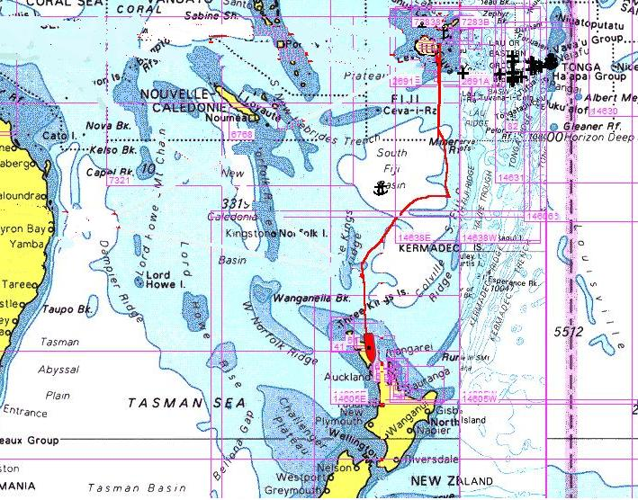
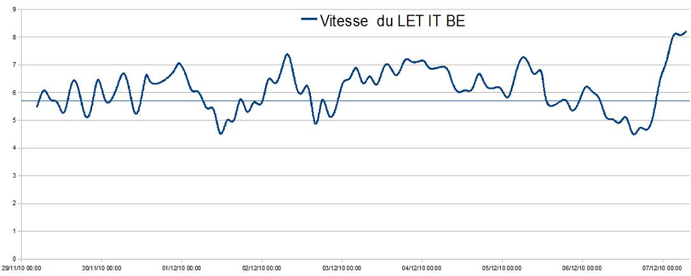

|
Traversée de Fidji vers Nlle Zélande. |
|
 |
|
Et pour ceux que la vitesse passionne... |
|
 |
| Date | Lieu | Log (nm) |
| 29/11/2010 au 08/12/2010 | Fidji vers Nlle Zélande | 11670 |
| 08/12/2010 au 16/12/2010 | Nlle Zélande - Opua | 11670 |
| 16/12/2010 au 17/12/2010 | Nlle Zélande - Whangarei | 11750 |